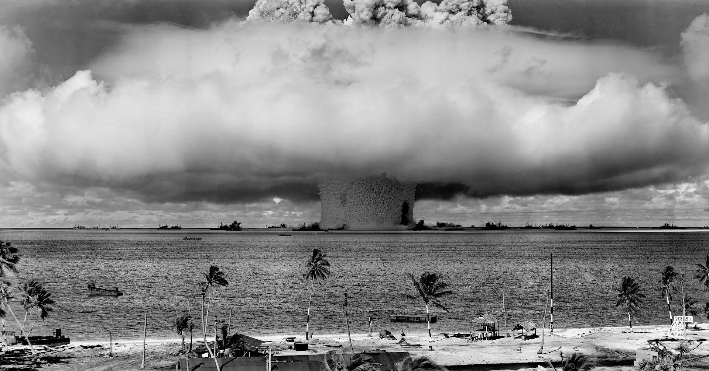

Nuclear test site
The United States detonated 23 nuclear devices between 1946 and 1958 at seven test sites on the reef, inside the atoll, in the air, and underwater.[17] They had a combined fission yield of 42.2 Mt. The testing began with the Operation Crossroads series in July 1946. The residents initially accepted resettlement voluntarily to Rongerik Atoll, believing that they would be able to return home within a short time. However, Rongerik could not produce enough food, and the islanders starved.